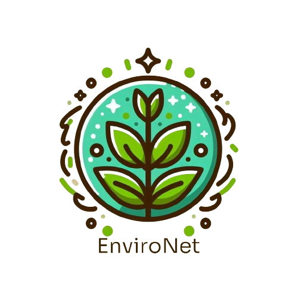

<mat-toolbar color="primary">
    <div id="logo">
        <a [routerLink]="['/']">
            
        </a>
    </div>
    <div id="name" [routerLink]="['/']">
        EnviroNet
    </div>
    <div id="buttons">
        <button mat-raised-button color="accent" [routerLink]="['/']">Home</button>
    </div>
</mat-toolbar>